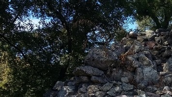
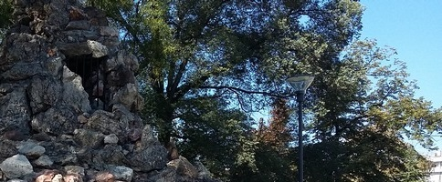
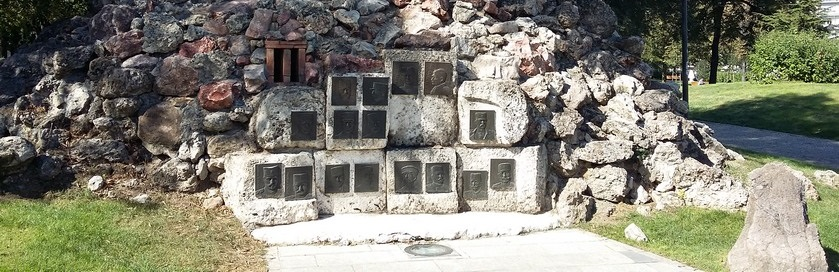

Le poste d'observation de Kaymakchalan:
généraux serbes et français



Parc des Pionniers: Monument aux généraux serbes et français
BALAYER L'IMAGE DU BAS POUR AFFICHER LES PLAQUES
À la suite de l'invasion par les armées austro-allemandes et bulgares de la Serbie, les troupes du général Sarrail débarquent à Salonique le 5 octobre 1915 pour conserver le contrôle du Vardar, seule voie de communication des Serbes vers l'extérieur. C'est un échec et elles se replient dans des conditions climatiques difficiles en décembre 1915. L'armée serbe est évacuée par les ports albanais et est reconstituée à Salonique.
Le 27 mai 1916, les Bulgares pénètrent en territoire grec. Ils envahissent toute la Macédoine orientale et s'apprêtent à verrouiller l'accès à la Macédoine occidentale. Le plus haut sommet de la Moglena, le
Kaymakchalan, qui domine la plaine de Salonique, est conquis le 20 août par les Serbes qui empêchent les Bulgares de couper la route de Monastir (Bitola) par la bataille d'Ostrovo, le 28 août. La ville de Monastir elle-même est investie le 19 novembre par les troupes françaises...
Le MONUMENT DU PARC DES PIONNIERS utilise des matériaux provenant de Kaymakchalan et reconstitue un poste d'observation qui joua un rôle capital dans les opérations:
"Osmatračnica sa Kajmakčalana".
Les généraux serbes et fançais dont les noms figurent sur les plaques qui ornent le monument s'illustrèrent à des titres divers lors de l'offensive victorieuse de l'été 1918 qui vit la défaite des Bulgares. Le prince Alexandre, régent de Serbie, commandait l'armée serbe. Il monta sur le trône de la future Yougoslavie en 1921.